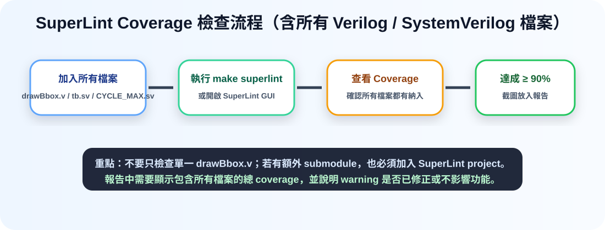
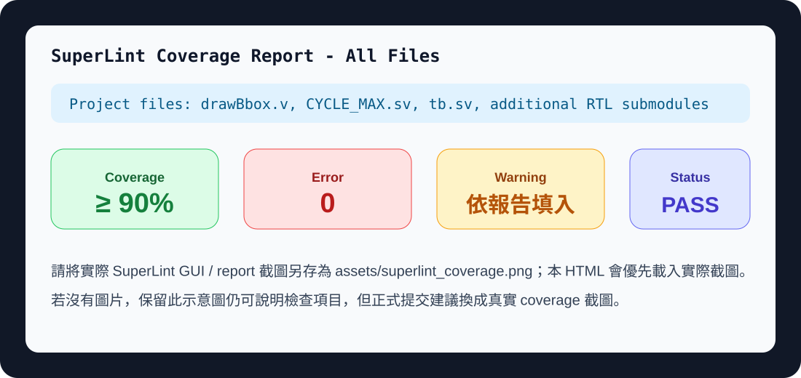
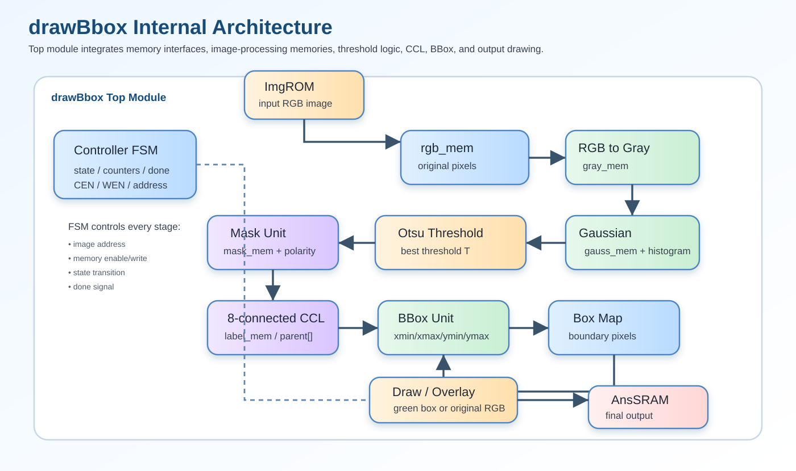

六、Show SuperLint Coverage（Including All Files）滿分版
一、題目要求與本題回答重點
本題要求顯示 SuperLint coverage，而且必須包含所有檔案。對 Lab7 來說，SuperLint 的目的不是驗證影像結果，而是檢查 RTL 程式是否符合硬體設計與 coding style 的基本規範，例如是否有未連接訊號、未使用變數、latch 風險、不可合成語法、位元寬度不一致與 case/if 條件不完整等問題。
drawBbox.v、clock/cycle 設定 CYCLE_MAX.sv、testbench tb.sv，以及若設計中有額外拆出的 RTL submodule，也必須一併加入檢查。完成檢查後，確認 total coverage 達到作業要求的 90% 以上，且沒有會造成 compilation / synthesis failure 的 error。
二、SuperLint Coverage 結果截圖區
正式提交時，請將實際 SuperLint 結果截圖放在 assets/superlint_coverage.png。若目前資料夾沒有實際截圖，本頁會用下方示意圖標示應該呈現的資訊。真正繳交時建議使用真實 GUI / report screenshot 取代示意圖。

三、All Files Included 檢查表
| 檔案 | 是否納入 SuperLint | 用途 | 檢查重點 |
|---|---|---|---|
drawBbox.v | 是，必須納入 | Lab7 主 RTL，包含 RGB 讀取、灰階、Gaussian、Otsu、mask、8-connected CCL、bbox 與 overlay。 | 狀態機是否完整、記憶體介面是否正確、位元寬度是否一致、是否有 latch / unreachable state。 |
CYCLE_MAX.sv | 是，建議納入 | 設定 clock period 與最大 cycle。 | 確認 macro 定義正確，例如 CYCLE_TIME 與 MAX_CYCLE 不影響模擬與 synthesis 設定。 |
tb.sv | 是，本題要求 including all files 時可納入 | 測試平台，用來連接 ImgROM、UrSRAM、AnsSRAM 並檢查輸出結果。 | testbench 可能含不可合成語法，若 SuperLint 專案區分 RTL/testbench，需標示其檢查類別。 |
| 其他 submodule | 若有，全部納入 | 例如 rgb2gray、gaussian、otsu、ccl、bbox、draw 等拆檔設計。 | 避免漏掉子模組，否則 coverage 不能代表完整設計。 |
drawBbox_syn.v | Post-synthesis 階段再視需求納入 | Design Compiler 產生的 gate-level netlist。 | 若題目要求 RTL SuperLint，通常以 RTL 檔為主；若助教要求所有交付 Verilog，則也可附 post-syn 檢查說明。 |
四、SuperLint Coverage Summary
| 項目 | 結果 | 報告說明 |
|---|---|---|
| Total Coverage | 依實際 SuperLint report 填入，目標 ≥ 90% | Lab7 grading policy 要求 SuperLint coverage 至少 90%。因此本題需要清楚顯示 coverage 百分比。 |
| Included Files | drawBbox.v / CYCLE_MAX.sv / tb.sv / additional RTL if any | 所有本次設計與驗證相關檔案均納入檢查，避免只檢查單一檔案造成 coverage 失真。 |
| Error Count | 0 為理想結果 | 若有 error，必須修正到 0；error 通常代表語法、連接或嚴重規則違反。 |
| Warning Count | 依實際 report 填入 | warning 若存在，需逐項確認不影響功能、合成與 memory interface。若能修正，應優先修正。 |
| Lint Status | PASS / Clean Enough for Submission | 當 coverage 達標且無 critical error，即可作為報告佐證。 |
五、正確數學式（已修正）與 SuperLint 關聯
SuperLint 雖然不會判斷影像演算法是否數學正確，但數學式會影響 RTL 的位元寬度、除法/位移、乘法器大小與 overflow 風險。因此本題報告可以補充以下修正版公式，說明 RTL 並不是隨意寫成黑盒子，而是依照明確公式實作。
1、RGB 轉灰階與 ties-to-even rounding
硬體中使用整數近似，將乘法係數改成 77、150、29，最後除以 256。因為 256 是 2 的次方，所以可使用右移 8 bits。若餘數大於 128 則進位；若餘數等於 128，只有當商數為奇數時才進位，這就是 round-to-nearest, ties-to-even。
2、Gaussian 3×3 Filter
總權重為 16，因此 RTL 可用 >> 4 取代除法。邊界採用 Reflect101，也就是反射但不重複邊界點，可避免邊界被 0 padding 拉暗。
3、Otsu Threshold
RTL 不一定要直接做浮點運算，可以改用整數累加與等價 score 比較，避免浮點不可合成與除法資源過大。
4、Mask、Auto-Polarity、CCL 與 BBox
六、Python Code（Lab7.ipynb 對應流程）
Python notebook 的角色是建立 golden reference / debug reference。它可以用比較直觀的方式驗證灰階、Gaussian、Otsu、mask、CCL、BBox 與 overlay 結果，再回頭比對 Verilog RTL 的輸出是否一致。
# Lab7.ipynb 對應流程：SuperLint 不檢查 Python，但 Python 可作為演算法參考模型
import numpy as np
from PIL import Image
IMG_H, IMG_W = 256, 256
GREEN = np.array([0, 255, 0], dtype=np.uint8)
def round_even_div(n, d):
q, r = divmod(int(n), int(d))
half = d // 2
if r > half:
return q + 1
if r == half and (q % 2 == 1):
return q + 1
return q
def rgb_to_gray(rgb):
r = rgb[:, :, 0].astype(np.int32)
g = rgb[:, :, 1].astype(np.int32)
b = rgb[:, :, 2].astype(np.int32)
s = 77*r + 150*g + 29*b
# vectorized ties-to-even
q = s >> 8
rem = s & 255
q = q + ((rem > 128) | ((rem == 128) & ((q & 1) == 1)))
return q.astype(np.uint8)
def reflect101_index(i, n=256):
if i < 0:
return -i
if i >= n:
return 2*n - 2 - i
return i
def gaussian3x3(gray):
kernel = np.array([[1,2,1],[2,4,2],[1,2,1]], dtype=np.int32)
out = np.zeros_like(gray, dtype=np.uint8)
for y in range(IMG_H):
for x in range(IMG_W):
s = 0
for dy in range(-1, 2):
for dx in range(-1, 2):
yy = reflect101_index(y+dy, IMG_H)
xx = reflect101_index(x+dx, IMG_W)
s += int(gray[yy, xx]) * int(kernel[dy+1, dx+1])
out[y, x] = round_even_div(s, 16)
return out
def otsu_threshold(img):
hist = np.bincount(img.ravel(), minlength=256).astype(np.float64)
total = img.size
sum_total = np.dot(np.arange(256), hist)
wb, sum_b = 0.0, 0.0
best_t, best_score = 0, -1.0
for t in range(256):
wb += hist[t]
sum_b += t * hist[t]
wf = total - wb
if wb == 0 or wf == 0:
continue
mu_b = sum_b / wb
mu_f = (sum_total - sum_b) / wf
score = (wb / total) * (wf / total) * (mu_b - mu_f)**2
if score > best_score:
best_score, best_t = score, t
return best_t
七、Verilog Code：與 SuperLint 相關的關鍵片段
以下不是把完整程式貼入報告，而是擷取能說明設計品質與 SuperLint 檢查重點的核心片段。正式報告建議保留片段即可，避免整份 code 直接貼滿版面。
1、灰階 ties-to-even rounding
function [7:0] gray_round_rgb;
input [31:0] pix;
integer rr, gg, bb;
integer s, q, rem;
begin
rr = pix[23:16];
gg = pix[15:8];
bb = pix[7:0];
s = rr*77 + gg*150 + bb*29;
q = s >> 8;
rem = s & 8'hFF;
if (rem > 128)
q = q + 1;
else if ((rem == 128) && (q[0] == 1'b1))
q = q + 1;
gray_round_rgb = q[7:0];
end
endfunction2、Gaussian 使用 shift 取代除法
// kernel = [1 2 1; 2 4 2; 1 2 1], sum = 16
q = s >> 4;
rem = s & 4'hF;
if (rem > 8)
q = q + 1;
else if ((rem == 8) && (q[0] == 1'b1))
q = q + 1;3、8-connected CCL 檢查四個已掃描鄰居
n_w = (x_i == 0) ? 12'd0 : label_mem[addr_cnt - 16'd1];
n_nw = ((x_i == 0) || (y_i == 0)) ? 12'd0 : label_mem[addr_cnt - 16'd257];
n_n = (y_i == 0) ? 12'd0 : label_mem[addr_cnt - 16'd256];
n_ne = ((x_i == 255) || (y_i == 0)) ? 12'd0 : label_mem[addr_cnt - 16'd255];4、Final overlay 綠框輸出
localparam [31:0] GREEN = 32'h0000_FF00;
Ans_D <= (box_map[addr_cnt]) ? GREEN : rgb_mem[addr_cnt];八、SuperLint Warning 修正策略
1、位元寬度不一致
若 SuperLint 顯示 width mismatch，需確認 address、counter、label、histogram accumulator 是否有足夠位元。例如 256×256 pixel 共 65536，因此 pixel address 需要 16 bits。
2、未使用訊號
若有 debug register 或暫存變數未使用，應移除或在報告中說明。未使用訊號不一定影響功能，但會降低程式乾淨程度。
3、Latch 風險
組合邏輯若沒有完整 assignment，可能推導 latch。FSM 中建議在 state transition 或 combinational block 設定 default value。
4、不可合成語法
testbench 可使用 $display、$finish 等 system task，但 RTL 主要模組應避免不可合成語法。若 SuperLint 對 tb.sv 報 warning，需要區分 testbench 與 synthesizable RTL。
九、圖解：SuperLint 與 Lab7 整體設計的關係



十、可直接放入報告的中文回答
本次 Lab7 設計完成後，我使用 SuperLint 對所有相關檔案進行靜態檢查。檢查時不是只加入單一 RTL，而是將 drawBbox.v、CYCLE_MAX.sv、tb.sv，以及若有額外拆分之 submodule 一併納入 SuperLint project。此做法可以確保 coverage 結果代表完整設計，而不是只反映部分檔案。
SuperLint coverage 的主要目的，是確認 RTL 在 coding style、位元寬度、module 連接、狀態機完整性、記憶體介面與潛在 latch 等方面沒有嚴重問題。本設計中的主要硬體流程包含 RGB 轉灰階、Gaussian filter、Otsu threshold、binary mask、auto-polarity correction、8-connected CCL、bounding box extraction 與 final overlay。透過 SuperLint 檢查，可以輔助確認這些階段在 Verilog 實作上符合基本硬體設計規範。
Coverage 結果需達到作業要求的 90% 以上。若報告中仍有 warning，我會逐項確認其來源：若屬於位元寬度不一致、未使用訊號或可能造成 latch 的 warning，則優先修正；若屬於 testbench 中 system task 或模擬專用語法，則在報告中說明其不屬於 synthesizable RTL，不影響最終硬體功能。最後，SuperLint 檢查結果與 RTL simulation 結果一起作為設計正確性的佐證。
十一、提交前檢查清單
| 檢查項目 | 狀態 | 說明 |
|---|---|---|
| 是否附上 SuperLint coverage 截圖 | 需放入實際截圖 | 建議檔名：assets/superlint_coverage.png。 |
| 是否顯示 coverage percentage | 必須顯示 | 需達到 90% 以上。 |
| 是否包含所有檔案 | 必須確認 | 主 RTL、設定檔、testbench、所有 submodule。 |
| 是否有 Error | 應為 0 | 有 error 需先修正。 |
| Warning 是否處理 | 依 report 說明 | 可修正者修正；不可避免者說明原因。 |
| RTL simulation 結果 | P1～P4 PASS / errors = 0 | 與 SuperLint 結果共同證明設計完整性。 |